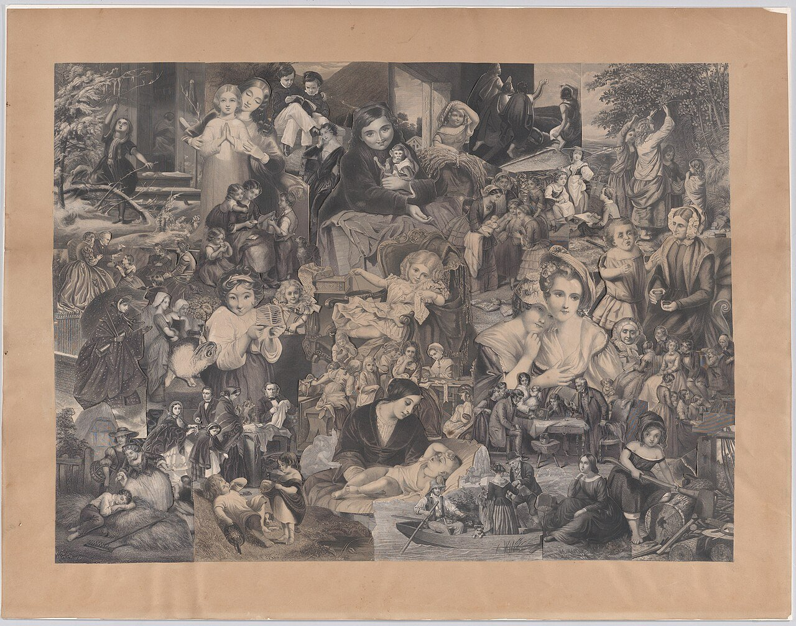
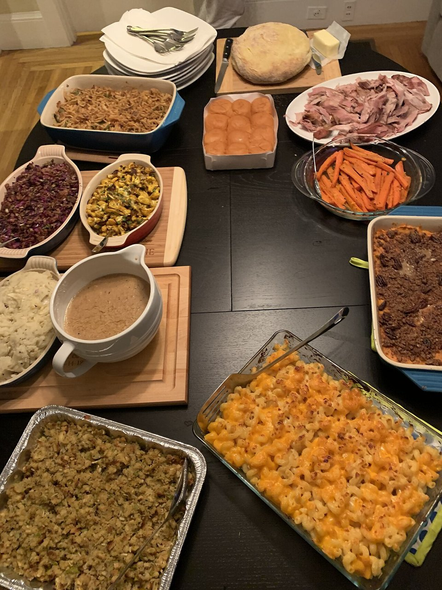

Karina's 2026 Review
Vocabulary, grammar, pronunciation, listening, reading and speaking, all from our lessons
Today's route
| Min | Stage | What we do | Skill |
|---|---|---|---|
| 0–5 | 1 Warm-up | Three questions: routines, current projects, small annoyances | Speaking |
| 5–15 | 2 Vocabulary | Flashcards, matching, collocations, chunks | Words |
| 15–27 | 3 Grammar | Tenses, too vs so, will vs going to, error hunt | Accuracy |
| 27–35 | 4 Pronunciation | Tricky words, -le endings, magic e, dictation | Sounds |
| 35–42 | 5 Listening | A phone chat about plans, with five questions | Listening |
| 42–52 | 6 Reading | "The Disappearing Family Meal", questions and a debate | Reading |
| 52–60 | 7 Speaking | "What's your collage?" plus wrap-up | Fluency |
Tip: tap a flashcard to flip it. Use Check, Show answers and Reset under every exercise. The 🔊 buttons read a word aloud with your device's voice.
Welcome back!

Language to use
in the morning · in the afternoon · at night · before · after
always · usually · sometimes · never · every day
first · then · after that · finally · at the end of the day
Right now: present continuous → "I'm learning about collage." · Plans that changed: "I was going to go, but I couldn't."
Teacher notes
Let Karina speak for about 90 seconds on question 1 without interruptions. Note two or three errors on a sticky list and revisit them in stage 3. Praise I'm learning and I was going to.
Words that matter
Flashcards (tap to flip)
Chunks: say them in whole phrases
be used for · Paper was used for calligraphy.
stick together · The artist sticks different pieces together.
cut out · Cut out some pictures from a magazine.
think differently · Art can help people think differently.
take away · The group wants to take away barriers to art.
around you · Look at the materials around you.
in new ways · Combine these elements in new ways.
there is no wrong way to… · There is no wrong way to make a collage.
Teacher notes
Ask Karina to flip a card, say the word in a new sentence about her own life, then flip to compare. Good extra words from past classes: manage to (succeed in doing something difficult), overthinking, discouraged, concern, foggy.
Accuracy check
| Tense | Use | Example |
|---|---|---|
| Present simple | habits, facts, stative verbs | I go to the gym every day. · She doesn't like pizza. |
| Present continuous | happening now, temporary, annoying habits with always | I'm working from home today. · He's always barking! |
| Past simple | finished past events | She studied at that school when she was ten. |
| Past continuous | action in progress in the past | He was driving to the city when I called. |
| Present perfect | experience or result up to now | Have you watched it already? |
| Past perfect | earlier than another past event | I had told you that before. |
| will / be going to | will: decisions now, promises, predictions. going to: plans already made | I'll call you. · We're going to visit Rome in June. |
too + adjective = a problem: "too shy".
so + adjective = intensifier: "so beautiful".
listen to = on purpose (a podcast).
hear = it just reaches your ears (thunder).
make = create from scratch (a collage).
do = perform an activity (homework).
"I got happy" (change of state). But: go crazy.
"I feel like eating pizza." · "I didn't feel like crying."
"I want you to be happy." · unless = if not.
Teacher notes
For exercise B, first ask Karina what is wrong (category), then why. Common patterns from our lessons: missing -ing after be, to after love/like + noun, better instead of best, a base verb after will, missing subject pronoun, prepositions with days and times (on Sundays, at the table, once a week).
Sounds we practised
WENZ-day
THURZ-day
CAN-sl
suh-JEST
REG-yoo-lar-lee
DEK-aydz
SKEJ-oolz
AR-gyoo
LOY-er
Teacher notes
Have Karina clap the stress: re-GU-lar-ly is wrong, REG-yoo-lar-lee is right. For Wednesday the middle "d" is silent. For dictation, pause the audio after each sentence if needed. Accept contractions in either form.
A chat about plans
Maya and Leo are talking about work and the weekend. Listen once for the general idea, then again for the details.
Show the transcript (after the exercise)
Maya: Hey Leo, did you manage to finish the report?
Leo: Almost! I was going to send it last night, but I felt so tired that I fell asleep on the sofa.
Maya: Don't worry. Unless the client calls today, you'll have the whole morning.
Leo: I hope so. I've been overthinking it all week. Honestly, I don't feel like working anymore.
Maya: Then take a break. I'm going to a pottery workshop on Saturday. Do you want to come?
Leo: Sounds great, but I'm too busy this weekend. My cousin is visiting, and I'll cook dinner for the whole family.
Maya: Wow, that's so kind of you. I'll see you on Monday, then.
Find in the text: manage to · was going to · so tired · unless · overthinking · don't feel like · too busy · I'll
The Disappearing Family Meal

Highlighted words: tap one to see its meaning here.
1. Is the decline of the family meal a real problem, or just a natural change in modern life?
2. How have delivery apps changed the way people in your city eat?
I couldn't agree moreThat's a fair point, but…I see it differently because…On the one hand… on the other hand…Even though…It depends on…
Teacher notes
Reading: 3 minutes silent with audio, 4 minutes for questions, 3 minutes for the debate. Watch for: sit down at the table, once a week, on Sundays, tend to have, and keeping the subject pronoun (they ruin my diet).
What's your collage?
Imagine you need to create a collage using five of these materials. Choose them, then explain your plan.
I'd like to use…
I would combine…
I would cut out…
I would tear…
I would stick…
I think it would represent…
First, take…
Then, cut out…
After that, tear…
Next, combine…
Finally, stick…
Teacher notes
Two rounds of 1 minute each. Round 1: Karina speaks. Round 2: she repeats with the corrections. Record the second attempt if she agrees, so she can compare it with her first.
How did it go?
Homework
Write about 120 words: My collage. Use at least five target structures. Your draft is saved on this device.